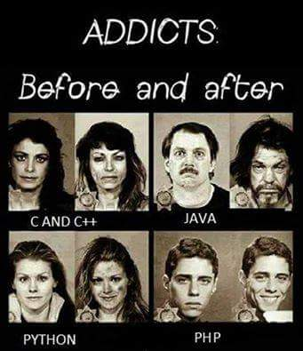

<!DOCTYPE html>
<html lang=zh-TW>
<head>
    <!-- so meta -->
    <meta charset="utf-8">
    <meta http-equiv="X-UA-Compatible" content="IE=edge">
    <meta name="HandheldFriendly" content="True">
    <meta name="viewport" content="width=device-width, initial-scale=1, maximum-scale=1" />
    <meta name="description" content="多年前曾因無奈使用 PHP ，這眾所皆知的「世界上最好的程式語言」寫了些東西。那時的衝擊害我後來對它只敢遠觀而不敢褻玩。 直到約一個月前應徵上了 Java 開發程式員，托福開始學習 PHP 。 對，你沒看錯，不要懷疑Java 開發者用 PHP 開發有什麼問題嗎？有的話請找我公司洽談。 大概是因為第一個學的語言是被 Oracle 辣手摧殘的 Java，所以一直以來都不是很喜歡動態語言。型態不知道、">
<meta name="keywords" content="php">
<meta property="og:type" content="article">
<meta property="og:title" content="Meet the PHP">
<meta property="og:url" content="https:&#x2F;&#x2F;nekowarabe.github.io&#x2F;2020&#x2F;02&#x2F;16&#x2F;meet-the-php&#x2F;index.html">
<meta property="og:site_name" content="Neko In Boots">
<meta property="og:description" content="多年前曾因無奈使用 PHP ，這眾所皆知的「世界上最好的程式語言」寫了些東西。那時的衝擊害我後來對它只敢遠觀而不敢褻玩。 直到約一個月前應徵上了 Java 開發程式員，托福開始學習 PHP 。 對，你沒看錯，不要懷疑Java 開發者用 PHP 開發有什麼問題嗎？有的話請找我公司洽談。 大概是因為第一個學的語言是被 Oracle 辣手摧殘的 Java，所以一直以來都不是很喜歡動態語言。型態不知道、">
<meta property="og:locale" content="zh-TW">
<meta property="og:image" content="https:&#x2F;&#x2F;nekowarabe.github.io&#x2F;images&#x2F;black_question.jpg">
<meta property="og:image" content="https:&#x2F;&#x2F;nekowarabe.github.io&#x2F;2020&#x2F;02&#x2F;16&#x2F;meet-the-php&#x2F;before_after.jpg">
<meta property="og:updated_time" content="2020-02-15T18:31:57.753Z">
<meta name="twitter:card" content="summary">
<meta name="twitter:image" content="https:&#x2F;&#x2F;nekowarabe.github.io&#x2F;images&#x2F;black_question.jpg">
    
    
        
          
              <link rel="shortcut icon" href="/images/favicon.ico">
          
        
        
          
            <link rel="icon" type="image/png" href="/images/favicon-192x192.png" sizes="192x192">
          
        
        
          
            <link rel="apple-touch-icon" sizes="180x180" href="/images/apple-touch-icon.png">
          
        
    
    <!-- title -->
    <title>Meet the PHP</title>
    <!-- styles -->
    <link rel="stylesheet" href="/css/style.css">
    <!-- persian styles -->
    
      <link rel="stylesheet" href="/css/rtl.css">
    
    <!-- rss -->
    
    
</head>

<body class="max-width mx-auto px3 ltr">
    
      <div id="header-post">
  <a id="menu-icon" href="#"><i class="fas fa-bars fa-lg"></i></a>
  <a id="menu-icon-tablet" href="#"><i class="fas fa-bars fa-lg"></i></a>
  <a id="top-icon-tablet" href="#" onclick="$('html, body').animate({ scrollTop: 0 }, 'fast');" style="display:none;"><i class="fas fa-chevron-up fa-lg"></i></a>
  <span id="menu">
    <span id="nav">
      <ul>
         
          <li><b><a href="/">首頁</a></b></li>
         
          <li><b><a href="/about/">關於</a></b></li>
         
          <li><b><a href="/archives/">雜學</a></b></li>
         
          <li><b><a href="/categories/">分類</a></b></li>
         
          <li><b><a href="/search/">搜尋</a></b></li>
        
      </ul>
    </span>
    <br/>
    <span id="actions">
      <ul>
        
        <li><a class="icon" href="/2020/02/28/char-encode-intro/"><i class="fas fa-chevron-left" aria-hidden="true" onmouseover="$('#i-prev').toggle();" onmouseout="$('#i-prev').toggle();"></i></a></li>
        
        
        <li><a class="icon" href="/2020/01/15/float-intro/"><i class="fas fa-chevron-right" aria-hidden="true" onmouseover="$('#i-next').toggle();" onmouseout="$('#i-next').toggle();"></i></a></li>
        
        <li><a class="icon" href="#" onclick="$('html, body').animate({ scrollTop: 0 }, 'fast');"><i class="fas fa-chevron-up" aria-hidden="true" onmouseover="$('#i-top').toggle();" onmouseout="$('#i-top').toggle();"></i></a></li>
        <li><a class="icon" href="#"><i class="fas fa-share-alt" aria-hidden="true" onmouseover="$('#i-share').toggle();" onmouseout="$('#i-share').toggle();" onclick="$('#share').toggle();return false;"></i></a></li>
      </ul>
      <span id="i-prev" class="info" style="display:none;">較新的</span>
      <span id="i-next" class="info" style="display:none;">較舊的</span>
      <span id="i-top" class="info" style="display:none;">回到開頭</span>
      <span id="i-share" class="info" style="display:none;">分享</span>
    </span>
    <br/>
    <div id="share" style="display: none">
      <ul>
  <li><a class="icon" href="http://www.facebook.com/sharer.php?u=https://nekowarabe.github.io/2020/02/16/meet-the-php/" target="_blank" rel="noopener"><i class="fab fa-facebook " aria-hidden="true"></i></a></li>
  <li><a class="icon" href="https://twitter.com/share?url=https://nekowarabe.github.io/2020/02/16/meet-the-php/&text=Meet the PHP" target="_blank" rel="noopener"><i class="fab fa-twitter " aria-hidden="true"></i></a></li>
  <li><a class="icon" href="http://www.linkedin.com/shareArticle?url=https://nekowarabe.github.io/2020/02/16/meet-the-php/&title=Meet the PHP" target="_blank" rel="noopener"><i class="fab fa-linkedin " aria-hidden="true"></i></a></li>
  <li><a class="icon" href="https://pinterest.com/pin/create/bookmarklet/?url=https://nekowarabe.github.io/2020/02/16/meet-the-php/&is_video=false&description=Meet the PHP" target="_blank" rel="noopener"><i class="fab fa-pinterest " aria-hidden="true"></i></a></li>
  <li><a class="icon" href="mailto:?subject=Meet the PHP&body=Check out this article: https://nekowarabe.github.io/2020/02/16/meet-the-php/" target="_blank" rel="noopener"><i class="fas fa-envelope " aria-hidden="true"></i></a></li>
  <li><a class="icon" href="https://getpocket.com/save?url=https://nekowarabe.github.io/2020/02/16/meet-the-php/&title=Meet the PHP" target="_blank" rel="noopener"><i class="fab fa-get-pocket " aria-hidden="true"></i></a></li>
  <li><a class="icon" href="http://reddit.com/submit?url=https://nekowarabe.github.io/2020/02/16/meet-the-php/&title=Meet the PHP" target="_blank" rel="noopener"><i class="fab fa-reddit " aria-hidden="true"></i></a></li>
  <li><a class="icon" href="http://www.stumbleupon.com/submit?url=https://nekowarabe.github.io/2020/02/16/meet-the-php/&title=Meet the PHP" target="_blank" rel="noopener"><i class="fab fa-stumbleupon " aria-hidden="true"></i></a></li>
  <li><a class="icon" href="http://digg.com/submit?url=https://nekowarabe.github.io/2020/02/16/meet-the-php/&title=Meet the PHP" target="_blank" rel="noopener"><i class="fab fa-digg " aria-hidden="true"></i></a></li>
  <li><a class="icon" href="http://www.tumblr.com/share/link?url=https://nekowarabe.github.io/2020/02/16/meet-the-php/&name=Meet the PHP&description=" target="_blank" rel="noopener"><i class="fab fa-tumblr " aria-hidden="true"></i></a></li>
  <li><a class="icon" href="https://news.ycombinator.com/submitlink?u=https://nekowarabe.github.io/2020/02/16/meet-the-php/&t=Meet the PHP" target="_blank" rel="noopener"><i class="fab fa-hacker-news " aria-hidden="true"></i></a></li>
</ul>

    </div>
    <div id="toc">
      <ol class="toc"><li class="toc-item toc-level-2"><a class="toc-link" href="#觀念破壞"><span class="toc-number">1.</span> <span class="toc-text">觀念破壞</span></a><ol class="toc-child"><li class="toc-item toc-level-3"><a class="toc-link" href="#意思不同的符號"><span class="toc-number">1.1.</span> <span class="toc-text">意思不同的符號</span></a></li><li class="toc-item toc-level-3"><a class="toc-link" href="#變數"><span class="toc-number">1.2.</span> <span class="toc-text">變數</span></a></li><li class="toc-item toc-level-3"><a class="toc-link" href="#不是-Array-的-Array"><span class="toc-number">1.3.</span> <span class="toc-text">不是 Array 的 Array</span></a></li><li class="toc-item toc-level-3"><a class="toc-link" href="#特殊變數或常數"><span class="toc-number">1.4.</span> <span class="toc-text">特殊變數或常數</span></a></li><li class="toc-item toc-level-3"><a class="toc-link" href="#需要修改-php-ini-來開啟函式庫"><span class="toc-number">1.5.</span> <span class="toc-text">需要修改 php.ini 來開啟函式庫</span></a></li><li class="toc-item toc-level-3"><a class="toc-link" href="#多到不可思議的關鍵字"><span class="toc-number">1.6.</span> <span class="toc-text">多到不可思議的關鍵字</span></a></li><li class="toc-item toc-level-3"><a class="toc-link" href="#官方無規範"><span class="toc-number">1.7.</span> <span class="toc-text">官方無規範</span></a></li></ol></li><li class="toc-item toc-level-2"><a class="toc-link" href="#結論"><span class="toc-number">2.</span> <span class="toc-text">結論</span></a></li><li class="toc-item toc-level-2"><a class="toc-link" href="#推薦閱讀"><span class="toc-number">3.</span> <span class="toc-text">推薦閱讀</span></a></li></ol>
    </div>
  </span>
</div>

    
    <div class="content index py4">
        
        <article class="post" itemscope itemtype="http://schema.org/BlogPosting">
  <header>
    
    <h1 class="posttitle" itemprop="name headline">
        Meet the PHP
    </h1>


    <div class="meta">
      <span class="author" itemprop="author" itemscope itemtype="http://schema.org/Person">
        <span itemprop="name">Nekowarabe</span>
      </span>
      
    <div class="postdate">
      
        <time datetime="2020-02-15T17:07:19.000Z" itemprop="datePublished">2020-02-16</time>
        
      
    </div>


      
    <div class="article-category">
        <i class="fas fa-archive"></i>
        <a class="category-link" href="/categories/%E7%A8%8B%E5%BC%8F/">程式</a> › <a class="category-link" href="/categories/%E7%A8%8B%E5%BC%8F/%E9%9B%9C%E4%B8%83%E9%9B%9C%E5%85%AB/">雜七雜八</a>
    </div>


      
    <div class="article-tag">
        <i class="fas fa-tag"></i>
        <a class="tag-link" href="/tags/php/" rel="tag">php</a>
    </div>


    </div>
  </header>
  

  <div class="content" itemprop="articleBody">
    <p>多年前曾因無奈使用 PHP ，這眾所皆知的「世界上最好的程式語言」寫了些東西。那時的衝擊害我後來對它只敢遠觀而不敢褻玩。</p>
<p>直到約一個月前應徵上了 Java 開發程式員，托福開始學習 PHP 。</p>
<p>對，你沒看錯，不要懷疑<br>Java 開發者用 PHP 開發有什麼問題嗎？有的話請找我公司洽談。</p>
<p>大概是因為第一個學的語言是被 Oracle 辣手摧殘的 Java，所以一直以來都不是很喜歡動態語言。型態不知道、屬性函式有沒有提供也不管這既是動態語言的強項，也是我最不喜歡的地方。</p>
<p>假使單人開發時使用動態語言我還可以理解，畢竟真的爽，想怎麼寫就怎麼寫。</p>
<p>明明都知道這個函式就只會丟字串，幹嘛還要每次都寫型態，反正是我自己呼叫、串接，輸入值會有哪些屬性、行為早就知道了，還要再補上轉型態啦、提示啦真的很麻煩耶。</p>
<p>只不過多人開發我覺得會是地獄，自由不棒嘛？當然棒，但自由也會帶來困惑，所以公司用動態語言寫真的讓我很痛苦。</p>
<p>……但是老實說我開始懷疑痛苦的原因該不會只是用了 PHP 吧？</p>
<h2 id="觀念破壞"><a href="#觀念破壞" class="headerlink" title="觀念破壞"></a>觀念破壞</h2><p>PHP 是第一個讓我有觀念被人當面撕碎，加水攪拌再潑我一臉的語言。</p>
<p>我認為 PHP 只適合兩種人：</p>
<ol>
<li>從來沒學過程式語言者</li>
<li>想學習新思維者</li>
</ol>
<p>再提一次因為我是 Java 出身，所以這些感覺可能只有我有。你沒有的話只代表我們的 Context 不同。（但歡迎分享其它看法）</p>
<h3 id="意思不同的符號"><a href="#意思不同的符號" class="headerlink" title="意思不同的符號"></a>意思不同的符號</h3><p>PHP 有些運算子的行為與我們想像的不同，直到現在我都不習慣它的字串相加。</p>
<figure class="highlight python"><table><tr><td class="gutter"><pre><span class="line">1</span><br><span class="line">2</span><br></pre></td><td class="code"><pre><span class="line"><span class="comment"># Python 的情況</span></span><br><span class="line">str = <span class="string">"Hello"</span> + <span class="string">" World"</span></span><br></pre></td></tr></table></figure>

<p>而 PHP 這麼與眾不同的語言，使用的是 <code>.</code> ：</p>
<figure class="highlight php"><table><tr><td class="gutter"><pre><span class="line">1</span><br><span class="line">2</span><br></pre></td><td class="code"><pre><span class="line"><span class="comment">// PHP 的情況</span></span><br><span class="line">$str = <span class="string">"Hello"</span> . <span class="string">" World"</span>;</span><br></pre></td></tr></table></figure>

<p>我記憶中的 <code>.</code> 是呼叫函式或屬性的，現在真的很難轉過來。</p>
<p>最靠北的是在專案內那些不加空白的寫法：</p>
<figure class="highlight php"><table><tr><td class="gutter"><pre><span class="line">1</span><br><span class="line">2</span><br><span class="line">3</span><br></pre></td><td class="code"><pre><span class="line">$url = $some_url.<span class="string">'?xxx_id='</span>.<span class="keyword">$this</span>-&gt;xxx_id;</span><br><span class="line">$buffer = $params_array[<span class="string">'no'</span>].$params_array[<span class="string">'amount'</span>].<span class="keyword">$this</span>-&gt;setting[<span class="string">'key'</span>].<span class="keyword">$this</span>-&gt;setting[<span class="string">'some_id'</span>];</span><br><span class="line">$postData[<span class="string">'Sign'</span>] = md5($postData[<span class="string">'Amount'</span>].<span class="string">'|'</span>.$postData[<span class="string">'MerId'</span>].<span class="string">'|'</span>.$postData[<span class="string">'MerOrderNo'</span>].<span class="string">'|'</span>.$postData[<span class="string">'MerOrderTime'</span>].<span class="string">'|'</span>.<span class="keyword">$this</span>-&gt;setting[<span class="string">'api_key'</span>]);</span><br></pre></td></tr></table></figure>

<p>厲害了我的點。</p>
<h3 id="變數"><a href="#變數" class="headerlink" title="變數"></a>變數</h3><p>動態語言變數沒有型態限制，你想賦予它什麼就是什麼。</p>
<figure class="highlight python"><table><tr><td class="gutter"><pre><span class="line">1</span><br><span class="line">2</span><br><span class="line">3</span><br></pre></td><td class="code"><pre><span class="line"><span class="comment"># Python 的情況</span></span><br><span class="line">num = <span class="number">1</span></span><br><span class="line">num = <span class="string">"進化成字串"</span></span><br></pre></td></tr></table></figure>

<p>但是 PHP 多了一個規定，所有的變數皆以 <code>$</code> 開頭：</p>
<figure class="highlight php"><table><tr><td class="gutter"><pre><span class="line">1</span><br><span class="line">2</span><br><span class="line">3</span><br></pre></td><td class="code"><pre><span class="line"><span class="comment">// PHP 的情況</span></span><br><span class="line">$num = <span class="number">123</span>;</span><br><span class="line">$num = <span class="string">"就是愛錢啦"</span>;</span><br></pre></td></tr></table></figure>

<p>也許是因為以往都不會看到那麼多金錢符號，我現在看到 <code>$</code> 都很煩躁。</p>
<p>它有專門的稱呼叫 Variable variables （可變的變數），什麼意思呢？直接看個例子：</p>
<figure class="highlight php"><table><tr><td class="gutter"><pre><span class="line">1</span><br><span class="line">2</span><br><span class="line">3</span><br><span class="line">4</span><br><span class="line">5</span><br></pre></td><td class="code"><pre><span class="line">$a = <span class="string">"hello"</span>;</span><br><span class="line">$$a = <span class="string">"world"</span>;</span><br><span class="line"></span><br><span class="line"><span class="keyword">echo</span> <span class="string">"$a $&#123;$a&#125;"</span>;  <span class="comment">// 輸出： hello world</span></span><br><span class="line"><span class="keyword">echo</span> $hello;      <span class="comment">// 輸出： world</span></span><br></pre></td></tr></table></figure>

<p>你可能會心想：『這他媽三小？』</p>
<p>我來解釋一下演變過程：</p>
<ol>
<li>$a 取出指向的值 “hello”</li>
<li>$ + “hello” 轉變為 $hello</li>
<li>$hello 指向值 “world”</li>
</ol>
<p></p>
<p>「這到底他媽的是三小！？」</p>
<p>是個類似於 Pointer ，但又比它莫名其妙的鬼東西<br>我懷疑可能是太容易激起同事的殺人慾望，目前還沒在專案中看人用過。</p>
<p>但你知道的，有這種功能存在就一定有使用它的人。</p>
<h3 id="不是-Array-的-Array"><a href="#不是-Array-的-Array" class="headerlink" title="不是 Array 的 Array"></a>不是 Array 的 Array</h3><p>之前接觸過的語言 Array 都是連續記憶體空間，也就是那種可以隨機存取的資料結構。</p>
<p>但是唯我獨尊的 PHP 之 Array 本質是一個 <strong>Sorted Hash Table</strong> （可排序雜湊表），俗稱的 Map 或 Dictionary 結構。</p>
<figure class="highlight php"><table><tr><td class="gutter"><pre><span class="line">1</span><br><span class="line">2</span><br><span class="line">3</span><br><span class="line">4</span><br><span class="line">5</span><br><span class="line">6</span><br><span class="line">7</span><br><span class="line">8</span><br><span class="line">9</span><br><span class="line">10</span><br><span class="line">11</span><br><span class="line">12</span><br><span class="line">13</span><br><span class="line">14</span><br><span class="line">15</span><br></pre></td><td class="code"><pre><span class="line"><span class="comment">// 看起來很正常</span></span><br><span class="line">$arr = <span class="keyword">array</span>(<span class="string">"A"</span>, <span class="number">100</span>, <span class="number">3.14159</span>);</span><br><span class="line">$arr[<span class="number">0</span>]; <span class="comment">// A</span></span><br><span class="line">$arr[<span class="number">1</span>]; <span class="comment">// 100</span></span><br><span class="line">$arr[<span class="number">2</span>]; <span class="comment">// 3.14159</span></span><br><span class="line"></span><br><span class="line"><span class="comment">// 但實際上等同於</span></span><br><span class="line">$arr = [</span><br><span class="line">    <span class="number">0</span> =&gt; <span class="string">"A"</span>,</span><br><span class="line">    <span class="number">1</span> =&gt; <span class="number">100</span>,</span><br><span class="line">    <span class="number">2</span> =&gt; <span class="number">3.14159</span>,</span><br><span class="line">];</span><br><span class="line"></span><br><span class="line"><span class="comment">// 或</span></span><br><span class="line">$arr = <span class="keyword">array</span>(<span class="number">0</span> =&gt; <span class="string">"A"</span>, <span class="number">1</span> =&gt; <span class="number">100</span>, <span class="number">2</span> =&gt; <span class="number">3.14159</span>);</span><br></pre></td></tr></table></figure>

<p>PHP 中 Array 就是一切是神是萬物所歸。</p>
<p>要傳一堆變數？用 Array<br>回傳多個值？用 Array<br>臨時想弄個結構？用 Array  </p>
<p>PHP 你不用考慮到情景使用不同的結構，因為你他媽就只有 Array 可以用，而且它還提供了詭異的語法糖：</p>
<figure class="highlight php"><table><tr><td class="gutter"><pre><span class="line">1</span><br><span class="line">2</span><br><span class="line">3</span><br><span class="line">4</span><br><span class="line">5</span><br><span class="line">6</span><br><span class="line">7</span><br><span class="line">8</span><br></pre></td><td class="code"><pre><span class="line">$arr = [<span class="string">'a'</span> =&gt; <span class="string">"Apple"</span>, <span class="string">'b'</span> =&gt; <span class="string">"Banana"</span>];</span><br><span class="line"></span><br><span class="line">$arr[] = <span class="string">"Cat"</span>;  <span class="comment">// [0 =&gt; "Cat", 'a' =&gt; "Apple", 'b' =&gt; "Banana"]</span></span><br><span class="line">$arr[<span class="number">0</span>];         <span class="comment">// Cat</span></span><br><span class="line"></span><br><span class="line">$arr[<span class="number">4</span>] = <span class="string">"Four"</span>; <span class="comment">// [0 =&gt; "Cat", 4 =&gt; "Four", 'a' =&gt; "Apple", 'b' =&gt; "Banana"]</span></span><br><span class="line">$arr[] = <span class="string">"Five"</span>;  <span class="comment">// [0 =&gt; "Cat", 4 =&gt; "Four", 5 =&gt; "Five", 'a' =&gt; "Apple", 'b' =&gt; "Banana"]</span></span><br><span class="line">$arr[<span class="number">5</span>];          <span class="comment">// Five</span></span><br></pre></td></tr></table></figure>

<p>太棒了，我還以為 <code>$array[] = XXX</code> 是重新指派 Array 呢，都內建一大堆函式了多個 <code>array_append</code> 之類的東西很難膩？</p>
<h3 id="特殊變數或常數"><a href="#特殊變數或常數" class="headerlink" title="特殊變數或常數"></a>特殊變數或常數</h3><p>PHP 是以 Web 為目的的語言，它充斥著滿滿的特殊變數在其中。</p>
<table>
<thead>
<tr>
<th align="center">Name</th>
<th align="center">Desc</th>
</tr>
</thead>
<tbody><tr>
<td align="center">$GLOBAL</td>
<td align="center">程式定義的所有全域變數陣列</td>
</tr>
<tr>
<td align="center">$_ENV</td>
<td align="center">執行環境相關陣列</td>
</tr>
<tr>
<td align="center">$_GET</td>
<td align="center">使用 HTTP Get 時傳遞的參數</td>
</tr>
<tr>
<td align="center">$_POST</td>
<td align="center">使用 HTTP Post 時傳遞的參數</td>
</tr>
<tr>
<td align="center">$_REQUEST</td>
<td align="center">存放與 Request 相關的資料</td>
</tr>
</tbody></table>
<p>除此之外還有常數，早期只能透過 <code>define(Name, Value, CaseSenstive?)</code> 這個內建函式定義，直到 5.3 之後才可以使用 const 關鍵字。</p>
<blockquote>
<p>但我看到大多數還是使用 define ，不太清楚原因</p>
</blockquote>
<p>因為這些特殊變數、魔術常數等都屬於全域，在全域的環境中做任何事都得先想想以免出錯找不到原因。</p>
<h3 id="需要修改-php-ini-來開啟函式庫"><a href="#需要修改-php-ini-來開啟函式庫" class="headerlink" title="需要修改 php.ini 來開啟函式庫"></a>需要修改 php.ini 來開啟函式庫</h3><p>這個我不確定有沒有其它解決方法。</p>
<p>專案有個串接的三方 API 是使用 SOAP 協議，而在 PHP 可以用 SoapClient 這個類別。</p>
<figure class="highlight php"><table><tr><td class="gutter"><pre><span class="line">1</span><br><span class="line">2</span><br><span class="line">3</span><br><span class="line">4</span><br><span class="line">5</span><br><span class="line">6</span><br></pre></td><td class="code"><pre><span class="line">$client = <span class="keyword">new</span> SoapClient(<span class="string">"...?wsdl"</span>);</span><br><span class="line"></span><br><span class="line">$params = <span class="keyword">array</span>(...);</span><br><span class="line">$res = $client-&gt;__soapCall(<span class="string">'METHOD'</span>, $params);</span><br><span class="line"></span><br><span class="line">...</span><br></pre></td></tr></table></figure>

<p>但開始測試時出現了錯誤，表示找不到 SoapClient Class 。</p>
<p>拜請了 Google 大神後發現得修改 php.ini 來啟用，我他媽第一次看到使用官方函式庫是透過更改語言設定才能用，摩達佛咖。</p>
<h3 id="多到不可思議的關鍵字"><a href="#多到不可思議的關鍵字" class="headerlink" title="多到不可思議的關鍵字"></a>多到不可思議的關鍵字</h3><p>各種各樣的關鍵字出現在 PHP 中，不斷讓我感到困惑。</p>
<p>好比說 include 與 require 這兩個他媽的幾乎一樣的關鍵字，差別在於 include 即使檔案不存在也不會報錯，所以大家都推薦使用 require ，我說那個 include 的存在價值呢？</p>
<p>還有特殊的實體關鍵字，比如可以透過：</p>
<figure class="highlight php"><table><tr><td class="gutter"><pre><span class="line">1</span><br><span class="line">2</span><br><span class="line">3</span><br><span class="line">4</span><br><span class="line">5</span><br></pre></td><td class="code"><pre><span class="line"><span class="comment">// 不論如何都會實例化當前這個類別</span></span><br><span class="line">$real_me = <span class="keyword">new</span> <span class="keyword">self</span>();</span><br><span class="line"></span><br><span class="line"><span class="comment">// 會實例化執行期的類別，好比說 Son 繼承後執行此段會實例化 Son</span></span><br><span class="line">$runtime_me = <span class="keyword">new</span> <span class="keyword">static</span>();</span><br></pre></td></tr></table></figure>

<p>還有為了提供不寫花括號而增加的 end 系列：</p>
<figure class="highlight php"><table><tr><td class="gutter"><pre><span class="line">1</span><br><span class="line">2</span><br><span class="line">3</span><br><span class="line">4</span><br><span class="line">5</span><br><span class="line">6</span><br><span class="line">7</span><br><span class="line">8</span><br><span class="line">9</span><br><span class="line">10</span><br><span class="line">11</span><br><span class="line">12</span><br><span class="line">13</span><br><span class="line">14</span><br><span class="line">15</span><br><span class="line">16</span><br><span class="line">17</span><br></pre></td><td class="code"><pre><span class="line"><span class="comment">// 原本的寫法</span></span><br><span class="line"><span class="keyword">if</span> ($x == <span class="keyword">true</span>) &#123;</span><br><span class="line">    <span class="keyword">echo</span> <span class="string">"X is true"</span>;</span><br><span class="line">    <span class="keyword">echo</span> <span class="string">", real true"</span>;</span><br><span class="line">&#125; <span class="keyword">else</span> &#123;</span><br><span class="line">    <span class="keyword">echo</span> <span class="string">"X is not true"</span>;</span><br><span class="line">    <span class="keyword">echo</span> <span class="string">", real false"</span>;</span><br><span class="line">&#125;</span><br><span class="line"></span><br><span class="line"><span class="comment">// 改用冒號與 end 結尾</span></span><br><span class="line"><span class="keyword">if</span> ($x == <span class="keyword">true</span>):</span><br><span class="line">    <span class="keyword">echo</span> <span class="string">"X is true"</span>;</span><br><span class="line">    <span class="keyword">echo</span> <span class="string">", real true"</span>;</span><br><span class="line"><span class="keyword">else</span>:</span><br><span class="line">    <span class="keyword">echo</span> <span class="string">"X is not true"</span>;</span><br><span class="line">    <span class="keyword">echo</span> <span class="string">", real false"</span>;</span><br><span class="line"><span class="keyword">endif</span>;</span><br></pre></td></tr></table></figure>

<p>選擇超多的，棒！</p>
<h3 id="官方無規範"><a href="#官方無規範" class="headerlink" title="官方無規範"></a>官方無規範</h3><p>官方的函式庫理應照著一套準則，這樣開發者使用時比較不會有困惑感，但是：</p>
<ul>
<li>strptime ： C 語言函式</li>
<li>nl2br ：縮寫</li>
<li>htmlspecialchars ：全寫</li>
<li>json_encode ：底線區隔</li>
</ul>
<p>最可悲的是這不是偶然，據說是因為作者以函式的名字為函式的 Hash 值，因此 PHP 中的函式都盡可能的長短皆有、均勻分布。</p>
<p>PHP 內建的函式多的誇張，所以 PHP 開發者最常做的事情就是去查看官方手冊。</p>
<p>聽起來雖然很正常，但因為所有類型的函式皆放在一塊（ Global ），所以你根本不知道字串操作、加密解密都提供了甚麼函式給你，還曾發生過版更替時將舊有的函式給移除的情況，手中沒個 PHP 手冊寫起程式抖得跟什麼一樣。</p>
<p>變數雖然大小寫敏感，但是函式與類別都不敏感，到底幹嘛這樣設計，能像下面那樣寫是很 Coooooooool 是嗎？</p>
<figure class="highlight php"><table><tr><td class="gutter"><pre><span class="line">1</span><br><span class="line">2</span><br><span class="line">3</span><br><span class="line">4</span><br></pre></td><td class="code"><pre><span class="line">$ctrl = <span class="keyword">new</span> SUPeRCOntroLLEr();</span><br><span class="line">$res = $ctrl-&gt;HANdle($input);</span><br><span class="line"></span><br><span class="line">$body = $res-&gt;GeTBoDy();</span><br></pre></td></tr></table></figure>

<p>就連型態都有好幾種寫法，以下都是一樣的：</p>
<ul>
<li>int/integer</li>
<li>bool/boolean</li>
<li>float/double/real</li>
</ul>
<p><a href="https://www.php.net/manual/en/function.is-real.php" target="_blank" rel="noopener">real</a> 是三小……</p>
<h2 id="結論"><a href="#結論" class="headerlink" title="結論"></a>結論</h2><p>經過這段時間其實我多少也了解了公司要使用 PHP 的原因，它確實具備某些特性與公司需求吻合。</p>
<p>但我依然得老實說這個語言完全給我走一步算一步的感覺，東抄西抄全都混在一起做撒尿牛丸，原本覺得因為各種歷史包袱不方便改，但版本迭代更新卻直接移除舊有的內建函式。</p>
<p>所以看來也不是沒辦法改嘛！</p>
<p>拜託把語法整合一下，函式命名邏輯統一點不要製造一堆驚喜真的很難嗎？</p>
<p>也許 PHPer 就是愛上這種充滿驚喜的感覺，有了驚喜就多了笑容：</p>
<p></p>
<p>我想，還是只能說：「啊， PHP 真的是世界上最好的語言了。」</p>
<h2 id="推薦閱讀"><a href="#推薦閱讀" class="headerlink" title="推薦閱讀"></a>推薦閱讀</h2><p><a href="https://www.zhihu.com/question/26498147" target="_blank" rel="noopener">「PHP 是最好的语言」这个梗是怎么来的？</a></p>

  </div>
</article>

    <div class="blog-post-comments">
        <div id="utterances_thread">
            <noscript>請開啟 JavaScript 功能來使用留言系統</noscript>
        </div>
    </div>


        
          <div id="footer-post-container">
  <div id="footer-post">

    <div id="nav-footer" style="display: none">
      <ul>
         
          <li><a href="/">首頁</a></li>
         
          <li><a href="/about/">關於</a></li>
         
          <li><a href="/archives/">雜學</a></li>
         
          <li><a href="/categories/">分類</a></li>
         
          <li><a href="/search/">搜尋</a></li>
        
      </ul>
    </div>

    <div id="toc-footer" style="display: none">
      <ol class="toc"><li class="toc-item toc-level-2"><a class="toc-link" href="#觀念破壞"><span class="toc-number">1.</span> <span class="toc-text">觀念破壞</span></a><ol class="toc-child"><li class="toc-item toc-level-3"><a class="toc-link" href="#意思不同的符號"><span class="toc-number">1.1.</span> <span class="toc-text">意思不同的符號</span></a></li><li class="toc-item toc-level-3"><a class="toc-link" href="#變數"><span class="toc-number">1.2.</span> <span class="toc-text">變數</span></a></li><li class="toc-item toc-level-3"><a class="toc-link" href="#不是-Array-的-Array"><span class="toc-number">1.3.</span> <span class="toc-text">不是 Array 的 Array</span></a></li><li class="toc-item toc-level-3"><a class="toc-link" href="#特殊變數或常數"><span class="toc-number">1.4.</span> <span class="toc-text">特殊變數或常數</span></a></li><li class="toc-item toc-level-3"><a class="toc-link" href="#需要修改-php-ini-來開啟函式庫"><span class="toc-number">1.5.</span> <span class="toc-text">需要修改 php.ini 來開啟函式庫</span></a></li><li class="toc-item toc-level-3"><a class="toc-link" href="#多到不可思議的關鍵字"><span class="toc-number">1.6.</span> <span class="toc-text">多到不可思議的關鍵字</span></a></li><li class="toc-item toc-level-3"><a class="toc-link" href="#官方無規範"><span class="toc-number">1.7.</span> <span class="toc-text">官方無規範</span></a></li></ol></li><li class="toc-item toc-level-2"><a class="toc-link" href="#結論"><span class="toc-number">2.</span> <span class="toc-text">結論</span></a></li><li class="toc-item toc-level-2"><a class="toc-link" href="#推薦閱讀"><span class="toc-number">3.</span> <span class="toc-text">推薦閱讀</span></a></li></ol>
    </div>

    <div id="share-footer" style="display: none">
      <ul>
  <li><a class="icon" href="http://www.facebook.com/sharer.php?u=https://nekowarabe.github.io/2020/02/16/meet-the-php/" target="_blank" rel="noopener"><i class="fab fa-facebook fa-lg" aria-hidden="true"></i></a></li>
  <li><a class="icon" href="https://twitter.com/share?url=https://nekowarabe.github.io/2020/02/16/meet-the-php/&text=Meet the PHP" target="_blank" rel="noopener"><i class="fab fa-twitter fa-lg" aria-hidden="true"></i></a></li>
  <li><a class="icon" href="http://www.linkedin.com/shareArticle?url=https://nekowarabe.github.io/2020/02/16/meet-the-php/&title=Meet the PHP" target="_blank" rel="noopener"><i class="fab fa-linkedin fa-lg" aria-hidden="true"></i></a></li>
  <li><a class="icon" href="https://pinterest.com/pin/create/bookmarklet/?url=https://nekowarabe.github.io/2020/02/16/meet-the-php/&is_video=false&description=Meet the PHP" target="_blank" rel="noopener"><i class="fab fa-pinterest fa-lg" aria-hidden="true"></i></a></li>
  <li><a class="icon" href="mailto:?subject=Meet the PHP&body=Check out this article: https://nekowarabe.github.io/2020/02/16/meet-the-php/" target="_blank" rel="noopener"><i class="fas fa-envelope fa-lg" aria-hidden="true"></i></a></li>
  <li><a class="icon" href="https://getpocket.com/save?url=https://nekowarabe.github.io/2020/02/16/meet-the-php/&title=Meet the PHP" target="_blank" rel="noopener"><i class="fab fa-get-pocket fa-lg" aria-hidden="true"></i></a></li>
  <li><a class="icon" href="http://reddit.com/submit?url=https://nekowarabe.github.io/2020/02/16/meet-the-php/&title=Meet the PHP" target="_blank" rel="noopener"><i class="fab fa-reddit fa-lg" aria-hidden="true"></i></a></li>
  <li><a class="icon" href="http://www.stumbleupon.com/submit?url=https://nekowarabe.github.io/2020/02/16/meet-the-php/&title=Meet the PHP" target="_blank" rel="noopener"><i class="fab fa-stumbleupon fa-lg" aria-hidden="true"></i></a></li>
  <li><a class="icon" href="http://digg.com/submit?url=https://nekowarabe.github.io/2020/02/16/meet-the-php/&title=Meet the PHP" target="_blank" rel="noopener"><i class="fab fa-digg fa-lg" aria-hidden="true"></i></a></li>
  <li><a class="icon" href="http://www.tumblr.com/share/link?url=https://nekowarabe.github.io/2020/02/16/meet-the-php/&name=Meet the PHP&description=" target="_blank" rel="noopener"><i class="fab fa-tumblr fa-lg" aria-hidden="true"></i></a></li>
  <li><a class="icon" href="https://news.ycombinator.com/submitlink?u=https://nekowarabe.github.io/2020/02/16/meet-the-php/&t=Meet the PHP" target="_blank" rel="noopener"><i class="fab fa-hacker-news fa-lg" aria-hidden="true"></i></a></li>
</ul>

    </div>

    <div id="actions-footer">
        <a id="menu" class="icon" href="#" onclick="$('#nav-footer').toggle();return false;"><i class="fas fa-bars fa-lg" aria-hidden="true"></i> 選單</a>
        <a id="toc" class="icon" href="#" onclick="$('#toc-footer').toggle();return false;"><i class="fas fa-list fa-lg" aria-hidden="true"></i> 段落</a>
        <a id="share" class="icon" href="#" onclick="$('#share-footer').toggle();return false;"><i class="fas fa-share-alt fa-lg" aria-hidden="true"></i> 分享</a>
        <a id="top" style="display:none" class="icon" href="#" onclick="$('html, body').animate({ scrollTop: 0 }, 'fast');"><i class="fas fa-chevron-up fa-lg" aria-hidden="true"></i> 回到開頭</a>
    </div>

  </div>
</div>

        
        <footer id="footer">
  <div class="footer-left">
    Copyright &copy; 2020 Nekowarabe
  </div>
  <div class="footer-right">
    <nav>
      <ul>
         
          <li><a href="/">首頁</a></li>
         
          <li><a href="/about/">關於</a></li>
         
          <li><a href="/archives/">雜學</a></li>
         
          <li><a href="/categories/">分類</a></li>
         
          <li><a href="/search/">搜尋</a></li>
        
      </ul>
    </nav>
  </div>
</footer>

    </div>
    <!-- styles -->
<link rel="stylesheet" href="/lib/font-awesome/css/all.min.css">
<link rel="stylesheet" href="/lib/justified-gallery/css/justifiedGallery.min.css">

    <!-- jquery -->
<script src="/lib/jquery/jquery.min.js"></script>
<script src="/lib/justified-gallery/js/jquery.justifiedGallery.min.js"></script>
<!-- clipboard -->

  <script src="/lib/clipboard/clipboard.min.js"></script>
  <script type="text/javascript">
  $(function() {
    // copy-btn HTML
    var btn = "<span class=\"btn-copy tooltipped tooltipped-sw\" aria-label=\"複製\">";
    btn += '<i class="far fa-clone"></i>';
    btn += '</span>'; 
    // mount it!
    $(".highlight table").before(btn);
    var clip = new ClipboardJS('.btn-copy', {
      text: function(trigger) {
        return Array.from(trigger.nextElementSibling.querySelectorAll('.code')).reduce((str,it)=>str+it.innerText+'\n','')
      }
    });
    clip.on('success', function(e) {
      e.trigger.setAttribute('aria-label', "成功！");
      e.clearSelection();
    })
  })
  </script>

<script src="/js/main.js"></script>
<!-- search -->

<!-- Google Analytics -->

<!-- Utterances Comments -->

    <script>
      (function(){
        var comment = document.getElementById("utterances_thread");
        if (comment != undefined) {
          var utterances = document.createElement('script');
          utterances.async = true;
          utterances.type = 'text/javascript'
          utterances.src = "https://utteranc.es/client.js";
          utterances.crossOrigin = "anonymous";
  
          utterances.setAttribute("theme", "photon-dark");
          utterances.setAttribute("repo", "nekowarabe/nekowarabe.github.io");
          utterances.setAttribute("issue-term", "title");

          comment.appendChild(utterances);
        }
      }());
    </script>

</body>
</html>
